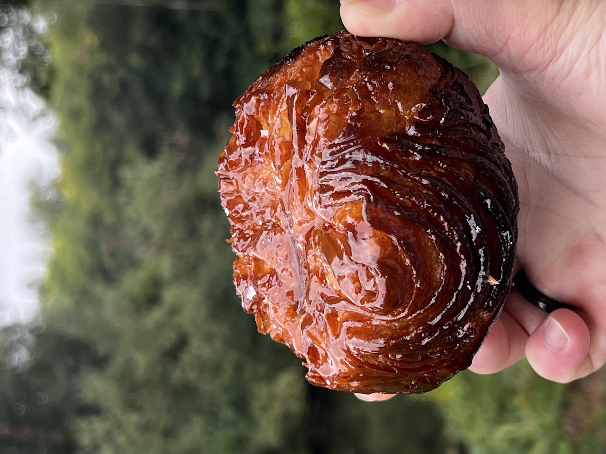

Keiffer Tan's Portal Page

Seattle Central
IT161 Fall 2023
Hello! My name is keiffer Tan. I was born on the island of Cebu in the Philippines. I grew up in Cebu City until I moved to Las Vegas with my family in 2005. In 2021, I moved to Seattle, and I currently work as a Pastry Cook/Baker. I am pursuing an associates degree in Software Development to pivot into a new career path.
More about me
My main loves are pastries & sweets and my beloved plants! I have worked in Baking and Pastry for over 5 years now, from a Japanese Patisserie, chocolatier, french bakery, and to a large hotel. One of my all time favorite pastries are the Kouign-Amann (Photo below, pastry from T55 in Bothel, WA) and Chocolate crinkle. I also love to travel when I am able to, and one of my favorite things is trying the local coffee and sweets of the area!

Homework Assignments
- Class Page
- Assignment 1
- Assignment 2
- Assignment 3
- Assignment 4
- Assignment 5
- Assignment 6
- Test
- Final Project